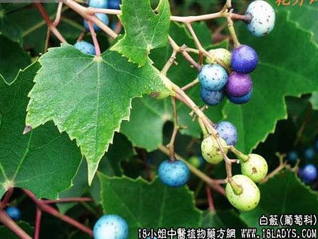

【中药概述】
白蔹为葡萄科藤本植物白蔹的块根。苦、微寒。归心、胃经。
1．清热解毒，消痈敛疮：用于热毒痈肿、或溃久不敛，清热解毒、消结肿、止疼痛的作用。治发背初起，可单用，或配金银花，连翘等同用。如（鸡峰普济方<白蔹散>）、（证治准绳<白蔹散>）。
2．烫伤：用于水、火烫伤，腹股沟疝痛，有理气散结与止痛作用。单用研末调油外敷。
【药效鉴别】
白蔹犹有生肌止痛作用。
【药理作用】
本品水浸剂对同心性毛癣菌、奥杜氏小芽胞癣菌、红色表皮癣菌等皮肤真菌有不同程度的抑制作用。
【化学成分】
含粘液质、淀粉等成分。
【用量用法】
本品9——26g，水煎服，或入丸、散剂。
【使用注意】
本品反乌头（半蒌贝蔹及攻乌）。